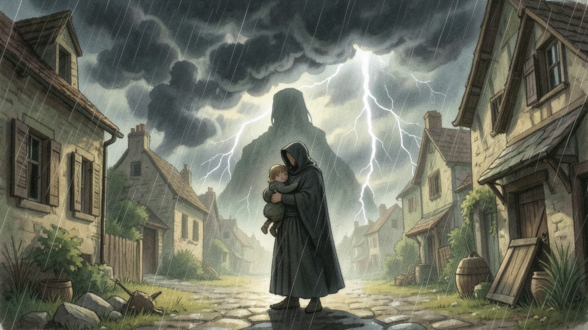
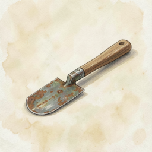
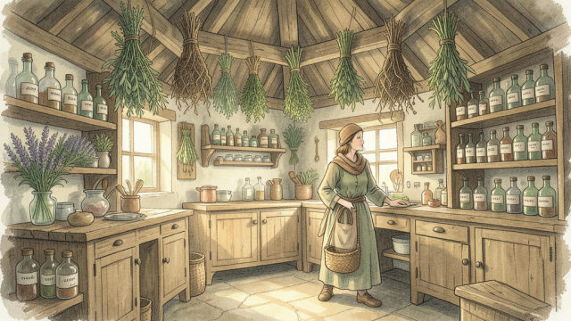
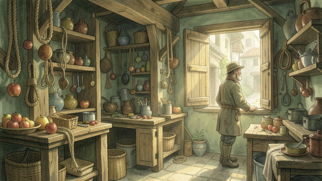

rq-s8li — Act 1 text matches its pictures (agreed)
The chosen option for each room. Struck text is today's; green is what ships.
The Dream — the man is seen, the word “shadows” stays
The drifting things are still called shadows, and the label sits on the dark cloud.

The label moves onto the dark cloud but keeps its name.
Today
It is dark, and it is raining hard. … Thunder breaks so close that the dark shakes with it. Shadows drift past like smoke. A man’s hand reaches out of the dark, lifts a child and holds it against his shoulder, and then both of them are gone. … A tall figure stands among the shadows. …
Agreed
It is raining hard on a village street. Thunder breaks so close that the shutters shake with it. Shadows drift through the rain like smoke. In the street a man in a hooded cloak holds a child against his shoulder. His hood hides his face. Somewhere a slow tune climbs three notes and settles home again. Behind him a tall figure stands among the shadows. It has no face you can find. It is too far away to reach, and too close to be only a dream. It is whispering, at the very edge of hearing, and what it whispers is your name.
Unchanged: “They drift past like smoke, and your hand goes through them. The tall figure does not drift with them.”
Today
He is gone. You saw only his hand, and how carefully it lifted the child.
Agreed
His hood hides his face. He holds the child carefully, as if it might wake.
Today
Gone with him, into the dark. It was small enough to hold against a shoulder, and it did not cry.
Agreed
Small enough to hold against a shoulder. It is asleep, and it does not cry.
Today
You go that way, and it is the same dark, the same rain, the same tune. There is no door in this. There is only the voice, and it says your name.
Agreed
You go that way, and it is the same street, the same rain, the same tune. There is no way out of this. There is only the voice, and it says your name.
Today
Your hands find nothing. The dark has no floor and the dream no edges. The whisper comes again, nearer, and it is your name.
Agreed
Your hands find nothing. The street has no end and the dream no edges. The whisper comes again, nearer, and it is your name.
Today
The dark lets go of you, and you wake in your own bed. The storm is gone and there is grey morning in the curtains. Your heart is going hard. …
Agreed
The dream lets go of you, and you wake in your own bed. The storm is gone and it is grey morning. Your heart is going hard. …
Elior's Cottage — the dark place is the doorway to your room
The picture has no bed and no curtains. Grandmother stands by a dark open doorway on the right, not at the hearth. When the lantern is lit it appears on a little table inside that doorway, beside the journal — so the dark place is your own room.

Today
A modest cottage with a straw roof and a cozy hearth. The scent of fresh bread and old books fills the air. The curtains are still drawn on a grey morning, and the corner by your bed is too dark to see into. A sturdy wooden table sits in the center, with a small loaf cooling on it, and a gentle fire crackles in the hearth. Grandmother stands by it, humming, and keeps an eye on the bread.
Agreed
A modest cottage with a straw roof and a cozy hearth. The scent of fresh bread and old books fills the air. The doorway to your room stands open, and the room beyond it is too dark to see into. A sturdy wooden table sits in the center, with a small loaf cooling on it, and a gentle fire crackles in the hearth. Grandmother stands by your doorway, humming, and keeps an eye on the bread.
Today
… Grey morning comes through the lace curtains onto shelves lined with trinkets and memories. A sturdy wooden table … Grandmother stands by it, humming, and keeps an eye on the next batch.
Agreed
… Firelight reaches the shelves, lined with trinkets and memories, and your room is no longer dark. A sturdy wooden table … Grandmother stands by your doorway, humming, and keeps an eye on the next batch.
Today
Grandmother looks up from the hearth before you reach the door. “Not with the bread nearly out, you don't. And that corner of yours is still dark; you've not even lit the lantern.”
Agreed
Grandmother looks up before you reach the door. “Not with the bread nearly out, you don't. And that room of yours is still dark; you've not even lit the lantern.”
“Someone out by the hearth was humming it” stays: Elior heard it from bed, before Grandmother crossed the room.
Vegetable Field — the hoe becomes a rusty trowel
Both pictures show a short-bladed digging tool, not a hoe: in the field it has a long handle, in the bag a short one.


The bag picture. “Trowel” matches this one exactly, and does not sound like the broken shovel you find later.
Today
… with only a few stubborn carrots and a rusty hoe hinting at better days. …
Agreed
… with only a few stubborn carrots and a rusty trowel hinting at better days. …
Today
rusty hoe — A hoe with a rusted blade and a splintered handle.
Agreed
rusty trowel — A trowel with a rusted blade and a worn wooden handle.
Today
You till the soil again with the hoe, but it seems you've already found what was hidden here.
Agreed
You dig the soil again with the trowel, but it seems you've already found what was hidden here.
Today
You swing the rusty hoe, but it doesn't seem to have much effect here. It's a sturdy (but rusty) tool, though.
Agreed
You dig at the ground with the rusty trowel, but it doesn't seem to have much effect here. It's a sturdy (but rusty) tool, though.
Unchanged: “The ground is tough, and you unearth a small, tarnished coin! …” and “Rust comes off on your palm. Someone worked a field with it for years.”
Village Well — a low stone well around a deep pool
The picture is a ring of mossy stones at ground level around dark green water with lily pads. The text has a raised well with water far down a shaft. The puzzle needs the bottom to stay out of reach, so the water is deep, not far down.

Today
An old stone well stands between the field and the forge, its stones worn smooth by countless hands. The water below lies dark and still, and a faint sour smell hangs in the cool, damp air. Moss creeps up the sides.
Agreed
An old stone well sits low in the grass between the field and the forge, a ring of stones worn smooth by countless hands around a deep pool. Lily pads float on dark green water, and a faint sour smell hangs in the cool, damp air. Moss creeps over the stones.
Today
… The water below glimmers with a crystalline clarity, and the air is cool and damp. Moss creeps up the sides.
Agreed
… around a deep pool. The water glimmers with a crystalline clarity, and the air is cool and damp. Moss creeps over the stones.
Today
An old stone well, its surface worn smooth, its shaft disappearing into the depths. The water below is dark and still, and it smells sour, the way milk does when it has turned. Far down, something glints, or you think it does. It is much too deep to reach.
Agreed
An old stone well, no higher than your knee, around water that goes down further than you can see. The water is dark and green, and it smells sour, the way milk does when it has turned. Far down, something glints, or you think it does. It is much too deep to reach.
Today
… its shaft disappearing into the depths. The water within is crystal clear. You can see something shiny at the bottom, but it's still too deep to reach by hand.
Agreed
An old stone well, no higher than your knee, around water that goes down further than you can see. The water is crystal clear now. You can see something shiny at the bottom, but it's still too deep to reach by hand.
Unchanged: “Moss grows thick on the north side of the stones, where the sun never reaches.”
Mira's Hut — she stands at the window, then turns to you
In the picture Mira stands at the window with her back to you, hood up, holding something in her hands. The text has her moving among the shelves and looking up at you as you come in.

Today
A small hut hung with drying herbs: lavender, sage, and roots in bundles from the rafters. Shelves of bottles line the walls, every one labelled. Mira moves among them without looking, the way you move through your own kitchen.
Agreed
A small hut hung with drying herbs: lavender, sage, and roots in bundles from the rafters. Shelves of bottles line the walls, every one labelled. Mira stands at the window with her back to you, tying a bundle of herbs in the light.
Today
Mira looks up from the herbs she is tying. “Elior. Come in, mind the sage.”
She studies your face. …
Agreed
Mira does not turn from the window. “Elior. Come in, mind the sage.”
Then she turns, and studies your face. …
Unchanged: her later lines (“doesn't look up from her herbs”, “turns back to her herbs”, “looks up from her herbs, and her eyes stay on you”) still fit, since she is tying herbs at the window.
General Store — Hemlock at his counter, watching the door
In the picture Hemlock stands at his counter sorting apples. The text has him at the window watching the lane (while the store is shut) and dusting jars (once it's open).

Today
A cluttered shop with the shutters half down. Rope, apples and trinkets crowd the shelves in the gloom. Hemlock stands at the window, watching the lane to the chapel.
Agreed
A cluttered shop with the shutters half down. Rope, apples and trinkets crowd the shelves in the gloom. Hemlock sorts apples at his counter, and looks up at the door every time the wind moves it.
Today
Hemlock looks up from the window, his face creased with worry. “Oh! Forgive me, lad, I was watching for her. Patches. …”
Agreed
Hemlock looks up from the apples, his face creased with worry. “Oh! Forgive me, lad, I thought you were her. Patches. …”
Today
A cluttered shop. … Outside, the lane runs east to the chapel. Hemlock dusts jars between customers, and every so often looks down by the counter, where his cat sleeps.
Agreed
A cluttered shop. … Outside, the lane runs east to the chapel. Hemlock sorts apples between customers, and every so often looks down by the counter, where his cat sleeps.
Blacksmith's Forge — a log fire, one horseshoe, and the wall label points at tools
The picture has an open log fire under a stone chimney, an anvil, a single horseshoe on the wall, tongs and a coil of rope, and Borin standing with his hammer, watching the fire. No glowing coals, no hinges or ploughshares.

Today
A hot, smoky forge. Coals glow in the hearth and the anvil rings. Hinges, ploughshares and horseshoes hang from the walls, waiting to be mended or fetched, and Borin wipes his brow without putting down the hammer.
Agreed
A hot, smoky forge. A log fire burns on the hearthstone, and not all of its smoke finds the chimney. A single horseshoe hangs on the wall. Borin stands between the fire and the anvil, his hammer in his hand, watching the fire.
Today
(unchanged — still says horseshoes hang from the walls)
Agreed
A hot, smoky forge. A log fire burns on the hearthstone, and not all of its smoke finds the chimney. Borin stands between the fire and the anvil, his hammer in his hand, watching the fire.
Today
(coals) The coals glow orange under a crust of grey. Borin feeds them without looking.
Agreed
(fire) Logs burn on a bed of red embers. Borin feeds them without looking.
Today
(hinges) Hinges and ploughshares hang on the walls, each tied with a scrap of cloth with a name on it. You know most of the names.
Agreed
(tools) Tongs and a coil of rope hang on the walls, each where Borin's hand expects it to be.
Unchanged: “The anvil is bright on top and black everywhere else. It rings for a long time after each blow.” / “Borin's hammer. The handle is dark where his hand goes.”